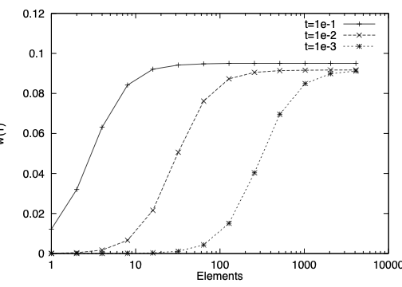

57. Structural mechanics#
Many engineering applications involve thin structures (walls of a building, body of a car, …). On thin structures, the standard approach has a problem: One observed that the simulation results get worse as the thickness decreases. The explanation is that the constant in Korn’s inequality gets small for thin structures. To understand and overcome this problem, we go over to beam, plate and shell models.
We consider a thin (\(t \ll 1\)) two-dimensional body
The goal is to derive a system of one-dimensional equations to describe the two-dimensional deformation. This we obtain by a semi-discretization. Define
This function space on \(\Omega \subset {\mathbb R}^2\) is isomorph to a one-dimensional function space with values in \({\mathbb R}^{M_x+M_y+2}\). We perform semi-discretization by searching for \(\tilde u \in \widetilde V_M\) such that
As \(M_x, M_y \rightarrow \infty\), \(\widetilde V_M \rightarrow V\), and we obtain convergence \(\tilde u \rightarrow u\).
The lowest order (qualitative) good approximating semi-discrete space is to set \(M_x = 1\) and \(M_y = 0\). This is
For
one easily finds
Evaluating the bilinear-form (of an isotropic material) by integrating in vertical direction leads to
The meaning of the three functions is as follows. The function \(U(x)\) is the average (over the cross section) longitudinal displacement, \(w(x)\) is the vertical displacement. The function \(\beta\) is the linearized rotation of the normal vector.
We assume that the load \(f(x,y)\) does not depend on \(y\). Then, the linear form is
The semi-discretization in this space leads to two decoupled problems. The first one describes the longitudinal displacement: Find \(U \in H^1(I)\) such that
The small thickness parameter \(t\) cancels out. It is a simple second order problem for the longitudinal displacement.
The second problems involves the 1D functions \(w\) and \(\beta\): Find \((w,\beta) \in V = ?\) such that
The first term models bending. The derivative of the rotation \(\beta\) is (approximative) the curvature of the deformed beam. The second one is called the shear term: For thin beams, the angle \(\beta \approx \tan \beta\) is approximately \(w^\prime\). This term measures the difference \(w^\prime - \beta\). This second problem is called the Timoshenko beam model.
For simplification, we skip the parameters \(\mu\) and \(\lambda\), and the constants. We rescale the equation by dividing by \(t^3\): Find \((w,\beta)\) such that
This scaling in \(t\) is natural. With \(t \rightarrow 0\), and a force density \(f \sim t^2\), the deformation converges to a limit. We define the scaled force density $\( \tilde f = t^{-2} f \)$
In principle, this is a well posed problem in \([H^1]^2\):
Lemma: Assume boundary conditions \(w(0) = \beta(0) = 0\). The bilinear-form \(A((w,\beta), (\tilde w, \tilde \beta))\) of the Timoshenko model is continuous
\[ A( (w,\beta), (\tilde w, \tilde \beta)) \preceq t^{-2} ( \| w \|_{H^1} + \| \beta \|_{H^1} ) ( \| \tilde w \|_{H^1} + \| \tilde \beta \|_{H^1} ) \]and coercive $\( A ( (w, \beta), (w, \beta) ) \succeq \| w \|_{H^1}^2 + \| \beta \|_{H^1}^2 \)$
Proof: exercise
As the thickness \(t\) becomes small, the ratio of the continuity and coercivity bounds becomes large ! This ratio occurs in the error estimates, and indicates problems. Really, numerical computations show bad convergence for small thickness \(t\).
The large coefficient in front of the term \(\int (w^\prime - \beta) (\tilde w^\prime - \tilde \beta)\) forces the difference \(w^\prime - \beta\) to be small. If we use piece-wise linear finite elements for \(w\) and \(\beta\), then \(w_h^\prime\) is a piece-wise constant function, and \(\beta_h\) is continuous. If \(w_h^\prime - \beta_h \approx 0\), then \(\beta_h\) must be a constant function !
The idea is to weaken the term with the large coefficient. We plug in the projection \(P^0\) into piece-wise constant functions: Find \((w_h, \beta_h)\) such that
Now, there are finite element functions \(w_h\) and \(\beta_h\) fulfilling \(P^0 (w_h^\prime - \beta_h) \approx 0\).
In the engineering community there are many such tricks to modify the bilinear-form. Our goal is to understand and analyze the obtained method.
Again, the key is a mixed method. Start from the bilinear-form and introduce a new variable
Using the new variable in the bilinear-form, and formulating the definition of \(p\) in weak form leads to the big system: Find \((w,\beta) \in V\) and \(p \in Q\) such that
This is a mixed formulation of the abstract structure: Find \(u \in V\) and \(p \in Q\) such that
The big advantage now is that the parameter \(t\) does not occur in the denominator, and the limit \(t \rightarrow 0\) can be performed.
This is a family of well posed problems:
Extended Brezzi’s Theorem: Assume that the assumptions of Brezzi’s Theorem are true. Furthermore, assume that
\[ a(u,u) \geq 0, \]and \(c(p,q)\) is a symmetric, continuous and non-negative bilinear-form. Then, the big form
\[ B((u,p),(v,q)) = a(u,v) + b(u,q) + b(v,p) - t^2 \, c(p,q) \]is continuous and stable uniformly in \(t \in [0,1]\).
We check Brezzi’s condition for the beam model. The spaces are \(V = [H^1]^2\) and \(Q = L_2\). Continuity of the bilinear-forms \(a(.,.)\), \(b(.,.)\), and \(c(.,.)\) is clear. The LBB condition is
We construct a candidate for the supremum:
Then
Finally, we have to check kernel coercivity. The kernel is
On \(V_0\) there holds
The lowest order finite element discretization of the mixed system is to choose continuous and piece-wise linear elements for \(w_h\) and \(\beta_h\), and piecewise constants for \(p_h\). The discrete problem reads as: Find \((w_h, \beta_h) \in V_h\) and \(p_h \in Q_h\) such that
This is a inf-sup stable system on the discrete spaces \(V_h\) and \(Q_h\). This means, we obtain the uniform a priori error estimate
The required regularity is realistic.
The second equation of the discrete mixed system states that
If we insert this observation into the first row, we obtain exactly the discretization method with the projection operator ! Here, the mixed formulation is a tool for analyzing a non-standard (primal) discretization method. Both formulations are equivalent. They produce exactly the same finite element functions. The mixed formulation is the key for the error analysis.
The two pictures below show simulations of a Timoshenko beam. It is fixed at the left end, the load density is constant one. We compute the vertical deformation \(w(1)\) at the right boundary. We vary the thickness \(t\) between \(10^{-1}\) and \(10^{-3}\). The first plot shows the results of a standard conforming method, the second plot shows the results of the method using the projection. As the thickness decreases, the standard method becomes worse. Unless \(h\) is less than \(t\), the results are completely wrong ! The improved method converges uniformly well with respect to \(t\):
{kind=link}


57.1. Limit problem: fourth order equation#
In the mixed formulation, we can set the thickness parameter \(t = 0\):
The second equation states that \(\beta = w^\prime\). Testing the first equation with \(\tilde \beta = \tilde w^\prime\), the upper right term on the left hand side vanishes.
We have obtained the limit problem: find \(w\) such that
for all test-functions \(\tilde w\). Since \(\beta = w^\prime \in H^1\), we have to search now \(w \in H^2\).
This model is called the Euler beam model. It is a coercive problem in \(H^2\). The corresponding strong form is the fourth-order equation